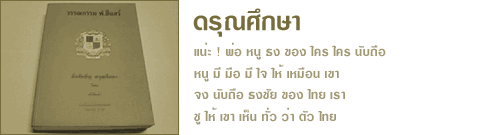

หนังสือดรุณศึกษา เป็นตำราเรียนภาษาไทยที่เจษฎาจารย์ ฟ. ฮีแลร์ ได้เรียบเรียงขึ้นเอง ภายหลังที่ได้เข้ามาอยู่ในประเทศไทย และดูแลกิจการของโรงเรียนอัสสัมชัญเพียง 9 ปี แสดงให้เห็นว่าท่านสนใจศึกษาภาษาไทยเป็นอย่างมาก จนสามารถแต่งตำราเรียนเป็นภาษาไทยได้ รวม 3 เล่ม ได้แก่ ดรุณศึกษาตอน กอ ขอ ดรุณศึกษาตอน กลาง และดรุณศึกษาตอน ปลาย
ต่อมาเจษฎาจารย์ ฟ. ฮีแลร์ เห็นว่าดรุณศึกษาตอน กอ ขอ ซึ่งมีขนดหนา กว่านักเรียนจะอ่านจบ หนังสือก็ชำรุดไปมาก ในการพิมพ์ครั้งที่ 4 จึงได้แบ่งออกเป็น 2 ตอน ตอนที่ 1 ยังคงกล่าวถึง ก ข จนจบแม่ ก กา ตอนอากู๋ และใช้ชื่อว่า ดรุณศึกษาตอน กอ ขอ ส่วนตอนที่ 2 ยังคงเรียกว่า ดรุณศึกษาตอน ต้น โดยตัดตั้งแต่บทที่ 33 สระ ะ , -า ถึงบทที่ 90 นายจำรัส (คำกลอน) และท่านได้ปรับปรุงสำนวนบางแห่งให้เข้าใจง่ายขึ้น ซึ่งก็จะต่อจากตอนกลางและตอนปลายได้เหมือนเดิม
ในการปรับปรุงและจัดพิมพ์ใหม่โดยคณะกรรมการปรับปรุงตำราเรียน ได้มีการแก้ไขบ้างบางส่วน และจัดพิมพ์ได้จำนวน 5 เล่ม โดยเนื้อหาเป็นของ กอ ขอ ตอนกลาง และตอน ปลาย ตามลำดับ โดยตัดต่อให้ได้ขนาดตามความเหมาะสมของแต่ละระดับชั้น ได้แก่ ชั้นเตรียมประถม 1 และชั้นประถมปีที่ 1 ถึงชั้นประถมปีที่ 4 รวม 5 เล่ม
หนังสืออัสสัมชัญ ดรุณศึกษา ตอน กอ ขอ นี้ เคยได้พิมพ์เป็นหนังสือที่ระลึกในงานพระบรมศพของพระบาทสมเด็จพระจุลจอมเกล้าเจ้าอยู่หัว ซึ่งเป็นฉบับพิมพ์เมื่อ ค.ศ. 1910 ดังข้อความปรากฎ จากบทความเรื่อง หนังสืองานพระบรมศพ ร. 5 มีกี่เล่ม ? โดย เอนก นาวิกมูล พิมพ์ลงในวารสารศิลปวัฒนธรรม ฉบับ เดือนตุลาคม พ.ศ. 2538 ดังนี้
" ด้วยโรงเรียนอัสสัมชัญนี้ได้ตั้งขึ้นโดยพระเดชานุภาพอุดหนุนเกื้อกูล เป็นโรงเรียนหนึ่งที่ได้ตั้งขึ้นในขั้นแรกที่จะมีโรงเรียนเป็นหลักฐานมั่นคง ในพระราชอาณาจักร โรงเรียนนี้ย่อมรู้สึกในพระมหากรุณาธิคุณ พระเมตตาคุณ ซึ่งแผ่ไพศาลเหลือทีจะพรรณนาได้ และไม่มีสิ่งใดที่จะทดแทนพระเดชพระคุณที่ได้มีแก่ชาวชนทั้งหลายในกรุงสยาม จึงขอพิมพ์แบบเรียนภาษาไทยนี้ไว้เป็นเครื่องหมายถวายไว้เป็นราชพลีที่ระลึกต่อไปจนกาลนานฉะนี้